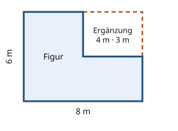

Zusammengesetzte Figuren
Mit einem KI-Tutor lernen
Ein KI-Tutor erklärt dir diese Seite und hilft dir bei den Aufgaben. Wähl deinen Assistenten:
Mit Claude öffnen Mit ChatGPT öffnen Mit Mistral Vibe öffnen
Du nutzt dein eigenes Konto beim Anbieter. Der Assistent ist kein Angebot von lernapps.net: lernapps liefert nur Inhalte und Aufgaben. Die Wahl gilt für alle Seiten, nur auf diesem Gerät.
Was du hier lernst
Wenn ein Zimmer oder eine Terrasse nicht rechteckig ist, zum Beispiel L-förmig, hilft die Formel für das Rechteck nicht sofort. Nach dieser Seite berechnest du Fläche und Umfang von Figuren, die aus Rechtecken bestehen.
Aufgabe
Lösung
Richtige Antwort: 52 m²
Das Zimmer hat m², der Teppich m². Frei bleiben m².
Zerlegen oder ergänzen
Wenn du die Fläche einer L-Form wissen willst, bringst du die Figur auf Rechtecke zurück. Du hast zwei Wege. Du zerlegst sie in Rechtecke und addierst die Flächen. Oder du ergänzt sie zu einem großen Rechteck und ziehst das Ergänzte ab.
 © CC-BY-4.0
© CC-BY-4.0Die gestrichelte Linie zerlegt die Figur in Teil 1 (4 m mal 3 m) und Teil 2 (8 m mal 3 m).

© CC-BY-4.0Die gestrichelte Ergänzung macht aus der Figur ein Rechteck. Von dessen Fläche ziehst du die Ergänzung ab.
- Zusammengesetzte Figur
Eine zusammengesetzte Figur besteht aus mehreren einfachen Figuren, zum Beispiel aus zwei Rechtecken. Du berechnest jede einzeln.
Merke
Beim Umfang zählst du nur den Rand der ganzen Figur. Die Schnittlinie, mit der du zerlegt hast, gehört nicht dazu.
Beispiel
Die L-förmige Figur
Zerlegen: Teil 1 hat m², Teil 2 hat m². Zusammen sind es 36 m². Ergänzen: Das große Rechteck hat m². Das fehlende Stück hat m². Es bleiben 36 m². Beide Wege geben dieselbe Zahl. Der Umfang ist m. Das ist auch m: Eine ausgeschnittene Ecke ändert den Umfang nicht.
Übung
Aufgabe
Drei Beispielaufgaben, jede mit ihrer Lösung:
Aufgabe Nr. 1
Eine L-förmige Terrasse entsteht aus einem Rechteck von 11 m mal 6 m. Aus einer Ecke ist ein Rechteck von 2 m mal 2 m herausgeschnitten. Berechne den Flächeninhalt in m².
Tipp
Berechne die Fläche des großen Rechtecks. Das herausgeschnittene Stück ist nicht Teil der Terrasse.
Lösung
- Großes Rechteck: .
- Herausgeschnitten: . Die Terrasse hat .
Richtige Antwort: 62 m²
Aufgabe Nr. 2
Eine L-förmige Terrasse entsteht aus einem Rechteck von 10 m mal 10 m. Aus einer Ecke ist ein Rechteck von 5 m mal 3 m herausgeschnitten. Berechne den Flächeninhalt in m².
Tipp
Berechne die Fläche des großen Rechtecks. Das herausgeschnittene Stück ist nicht Teil der Terrasse.
Lösung
- Großes Rechteck: .
- Herausgeschnitten: . Die Terrasse hat .
Richtige Antwort: 85 m²
Aufgabe Nr. 3
Eine L-förmige Terrasse entsteht aus einem Rechteck von 11 m mal 9 m. Aus einer Ecke ist ein Rechteck von 3 m mal 2 m herausgeschnitten. Berechne den Flächeninhalt in m².
Tipp
Berechne die Fläche des großen Rechtecks. Das herausgeschnittene Stück ist nicht Teil der Terrasse.
Lösung
- Großes Rechteck: .
- Herausgeschnitten: . Die Terrasse hat .
Richtige Antwort: 93 m²
Aufgabe
Drei Beispielaufgaben, jede mit ihrer Lösung:
Aufgabe Nr. 1
Eine L-förmige Terrasse entsteht aus einem Rechteck von 13 m mal 8 m. Aus einer Ecke ist ein Rechteck von 6 m mal 3 m herausgeschnitten. Berechne den Umfang in m.
Tipp
Gehe in Gedanken einmal am Rand entlang. Wie lang sind die sechs Randstücke zusammen?
Lösung
- Rand: .
- Der Ausschnitt in der Ecke ändert den Weg nicht: .
Richtige Antwort: 42 m
Aufgabe Nr. 2
Eine L-förmige Terrasse entsteht aus einem Rechteck von 10 m mal 10 m. Aus einer Ecke ist ein Rechteck von 6 m mal 4 m herausgeschnitten. Berechne den Umfang in m.
Tipp
Gehe in Gedanken einmal am Rand entlang. Wie lang sind die sechs Randstücke zusammen?
Lösung
- Rand: .
- Der Ausschnitt in der Ecke ändert den Weg nicht: .
Richtige Antwort: 40 m
Aufgabe Nr. 3
Eine L-förmige Terrasse entsteht aus einem Rechteck von 12 m mal 6 m. Aus einer Ecke ist ein Rechteck von 5 m mal 3 m herausgeschnitten. Berechne den Umfang in m.
Tipp
Gehe in Gedanken einmal am Rand entlang. Wie lang sind die sechs Randstücke zusammen?
Lösung
- Rand: .
- Der Ausschnitt in der Ecke ändert den Weg nicht: .
Richtige Antwort: 36 m
Aufgabe
Drei Beispielaufgaben, jede mit ihrer Lösung:
Aufgabe Nr. 1
Eine Terrasse besteht aus zwei Rechtecken. Das erste ist 7 m mal 4 m groß, das zweite 3 m mal 2 m. Berechne die gesamte Fläche in m².
Tipp
Berechne beide Flächen einzeln. Was machst du dann mit ihnen?
Lösung
- Erstes Rechteck: m².
- Zweites Rechteck: m². Zusammen: .
Richtige Antwort: 34 m²
Aufgabe Nr. 2
Eine Terrasse besteht aus zwei Rechtecken. Das erste ist 8 m mal 5 m groß, das zweite 7 m mal 2 m. Berechne die gesamte Fläche in m².
Tipp
Berechne beide Flächen einzeln. Was machst du dann mit ihnen?
Lösung
- Erstes Rechteck: m².
- Zweites Rechteck: m². Zusammen: .
Richtige Antwort: 54 m²
Aufgabe Nr. 3
Eine Terrasse besteht aus zwei Rechtecken. Das erste ist 10 m mal 3 m groß, das zweite 5 m mal 2 m. Berechne die gesamte Fläche in m².
Tipp
Berechne beide Flächen einzeln. Was machst du dann mit ihnen?
Lösung
- Erstes Rechteck: m².
- Zweites Rechteck: m². Zusammen: .
Richtige Antwort: 40 m²
Aufgabe
Lösung
Richtige Antwort: Die Aussage stimmt nicht.
Die Schnittlinie liegt im Inneren der Figur. Der Umfang ist nur der Weg um die ganze Figur.
Fehler gefunden oder eine Idee für diese App?